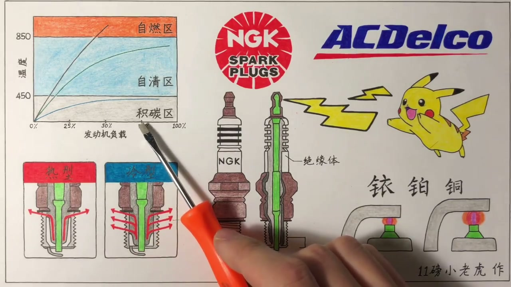
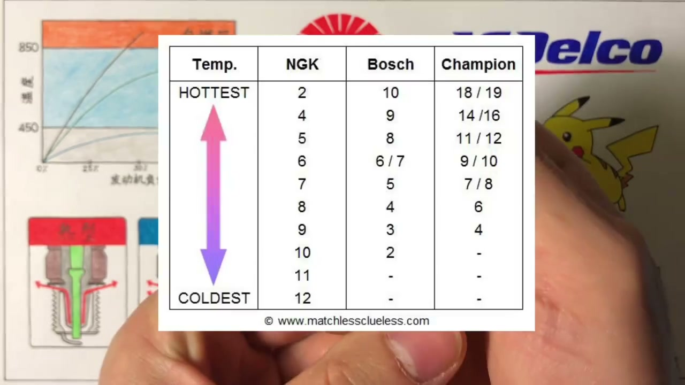
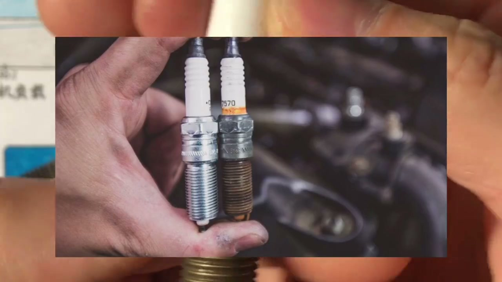
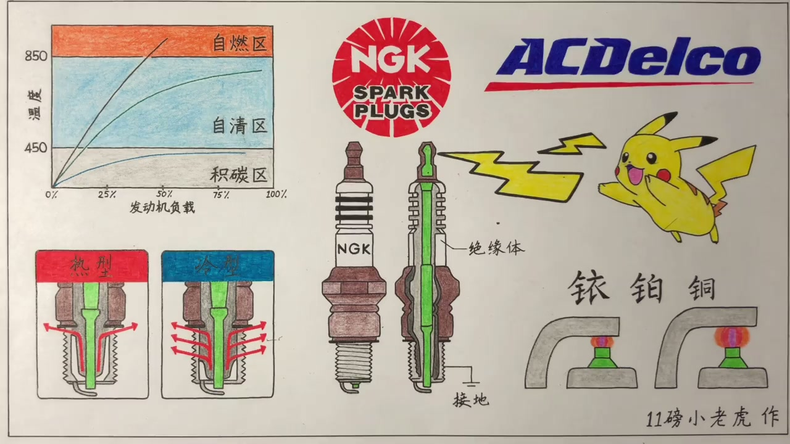

01
中文
火花塞越冷，工作温度越低，电极上的积碳清不掉。
EN
A colder plug runs cooler and can't burn deposits off its electrodes.
表达提示deposits（积碳）

Scene English · 汽车 · 火花塞
Spark Plugs (2): Heat Range and Reading the Plug
🎧 语音讲解
Cold vs Hot Plugs
情境火花塞越冷工作温度越低，燃烧室的积碳、机油、废气颗粒物沉淀到电极上，温度不足以燃烧清除，慢慢覆盖电极影响发动机表现、缩短寿命。火花塞越热温度越高，能自己清除电极表面的积碳；但温度太高，高到还没到点火的时候火花塞自身温度就足以点燃油气混合体，就会出现提前爆震、敲缸。
火花塞越冷，工作温度越低，电极上的积碳清不掉。
A colder plug runs cooler and can't burn deposits off its electrodes.
表达提示deposits（积碳）
积碳慢慢覆盖电极表面，影响发动机的表现，缩短火花塞的寿命。
Deposits coat the electrodes, hurting performance and life.
表达提示coat（覆盖）
火花塞越热，能自己清除电极表面的积碳。
A hotter plug burns deposits off itself.
表达提示self-cleaning（自洁）
但温度太高，还没到点火时候就足以点燃油气混合体，出现提前的爆震、敲缸。
Too hot and it pre-ignites the charge—knock and pinging.
表达提示pre-ignition（提前点火）
deposits（积碳
coat（覆盖

The Self-Cleaning Zone: 450–850°C
情境火花塞低于450度处于积碳区，高于850度处于自燃区比较危险，容易提前点燃汽油。最佳工作温度在450到850度之间，既足够热可以清除积碳，又不会有敲缸自爆风险，这个区间叫自清区。
火花塞低于450度处于积碳区，高于850度处于自燃区，比较危险。
Below 450°C plugs foul; above 850°C they self-ignite—dangerous.
表达提示foul（积碳）
最佳工作温度在450到850度之间，叫自清区。
The sweet spot is 450–850°C, the self-cleaning zone.
表达提示sweet spot（最佳区间）
既足够热能清除积碳，又不会有敲缸自爆的风险。
Hot enough to self-clean, cool enough to avoid knock.
表达提示self-clean（自清洁）
foul（积碳
sweet spot（最佳区间

Too Cold or Too Hot
情境火花塞太偏冷型散热太好，即使油门全开、发动机温度最高时火花塞温度还是上不去，停留在积碳区。太偏热型散热慢，油门稍微踩深一点温度就飙升进入自燃区。原厂推荐的火花塞差不多就是中间绿线的工况，没事不要去买更冷或更热的。
太偏冷型，即使油门全开火花塞温度还是上不去，停留在积碳区。
Too cold and even at full throttle the plug stays in the fouling zone.
表达提示fouling zone（积碳区）
太偏热型，油门稍微踩深一点温度就飙升，直接进入自燃区。
Too hot and a bit of throttle sends the temperature soaring into self-ignition.
表达提示self-ignition zone（自燃区）
原厂推荐的火花塞差不多就是中间那条绿线的工况，没事不要去买更冷或更热的。
Factory plugs sit on the middle green line—don't chase colder or hotter.
表达提示factory spec（原厂规格）
fouling zone（积碳区
self-ignition zone（自燃区

Daily Drivers: Hot; Sports Cars: Cold
情境一般家用车或城市低速车用热型火花塞居多，因为发动机平时低负荷运行温度高不到哪去，需要散热慢一点保持温度避免积碳。运动车型一般用相对冷一点的火花塞，因为经常地板油发动机一直高温运行，火花塞容易过热，需要散热更好的冷型。
一般的家用车或城市低速车，用的是热型火花塞居多。
Typical city cars run hotter plugs.
表达提示hotter plugs（热型火花塞）
发动机平时低负荷运行温度本来就高不到哪去，需要散热慢一点保持住温度。
Low-load engines never get hot, so slow heat loss keeps the plug hot enough.
表达提示low load（低负荷）
运动车型动不动就地板油，发动机一直在高温运行，需要散热更好的冷型火花塞。
Sports cars run flat-out and hot, so they need colder, better-cooled plugs.
表达提示flat-out（地板油）
hotter plugs（热型火花塞
low load（低负荷

Reading NGK Part Numbers
情境火花塞冷热度标在火花塞上。以NGK为例，编号IZFR6K11S的第五位数字6就是热值：数字越小越热，数字越大越冷。不同品牌标注方法不同，博世编号ZGR6ST12里的6和NGK相反，数字越大越热。
火花塞的冷热度都标识在火花塞上面，以NGK为例，IZFR6K11S的第五位数字6指的就是热值。
Heat range is printed on the plug—in NGK's IZFR6K11S, the 5th digit (6) is the heat rating.
表达提示heat rating（热值）
对NGK来说，数字越小越热，数字越大就越冷。
For NGK, a smaller number means hotter.
表达提示hotter（更热）
不同品牌标注不同，博世的6正好相反，数字越大越热。
Other brands differ—Bosch's number climbs as heat rises.
表达提示opposite（相反）
heat rating（热值
hotter（更热

What a Healthy Plug Looks Like
情境拆下旧火花塞最重要是检查两个电极。颜色灰灰的或淡淡的褐色、整体干燥、电极没有断裂迹象，说明火花塞是好的，只是用得久了一点，完全可以接着用。陶瓷尾部有黄色是串气烤糊了，不影响任何性能，不需要看。
检查火花塞好坏，最重要的是看两个电极。
Reading a plug comes down to the electrodes.
表达提示read the plug（读火花塞）
颜色灰灰的或淡淡的褐色、整体干燥、电极没有断裂，说明火花塞是好的。
Gray or light tan, dry, and intact electrodes mean a healthy plug.
表达提示light tan（淡褐色）
陶瓷尾部的黄色是串气烤糊的，不影响性能，不需要看。
Yellow at the ceramic base is just gas blow-by staining—harmless.
表达提示staining（染色）
read the plug（读火花塞
light tan（淡褐色
Fouled by Carbon or Oil
情境电极黑黑一层像被熏黑的，是积碳污染。原因很多：空气滤芯很脏、长期小油门开车、长时间怠速，即使正确的火花塞在低负荷下也会积碳。富油工况燃烧不充分也会积碳，这时不仅要换火花塞还要查清根源，光换火花塞是治标不治本。如果积碳黑黑的但是油油的，是机油污染，典型是活塞环或气门油封密封不严，机油漏进燃烧室，同样要先解决根源再换火花塞。
黑黑的一层被熏黑的感觉，就是被积碳污染的火花塞。
A black, sooty coating means carbon fouling.
表达提示sooty（熏黑的）
空气滤芯脏、长期小油门、长时间怠速，都会让火花塞积碳。
Dirty air filters, constant light throttle, and long idling all cause it.
表达提示light throttle（小油门）
富油工况燃烧不充分也会形成积碳，不仅要换火花塞还要检查根源，光换是治标不治本。
Rich running fouls plugs too—fix the root cause or it recurs.
表达提示root cause（根源）
黑黑的但是油油的，是机油污染，典型是活塞环或气门油封密封不严。
Black and oily points to oil contamination—usually worn rings or valve seals.
表达提示oil contamination（机油污染）
sooty（熏黑的
light throttle（小油门

Wet, Burned, and Worn Plugs
情境火花塞湿的一般发生在连续打火打不着之后，汽油一直喷但没被点燃把火花塞弄湿了，用清洗剂清洗吹干、再找到打不着火的原因即可。电极有白色沉淀物或融化痕迹，说明经历过高得不该承受的高温，可能是发动机过热或冷热型没选对，需要更换。电极明显磨损甚至断裂，一般都是太久不按时换火花塞导致。
火花塞湿的，一般发生在连续打火打不着之后，汽油把火花塞弄湿了。
A wet plug usually follows repeated failed starts—fuel soaks it.
表达提示wet plug（湿火花塞）
用清洗剂清洗吹干，再把打不着火的原因找到就可以了。
Clean it, dry it, and find why it wouldn't start.
表达提示clean and dry（清洗吹干）
白色沉淀物或融化痕迹，说明火花塞经历过高得不该承受的高温，需要更换。
White deposits or melted spots mean extreme overheating—replace it.
表达提示melted（融化）
电极明显磨损甚至断裂，一般都是太久不按时换火花塞导致的。
Heavy wear or a broken electrode usually means the change interval was ignored.
表达提示change interval（更换周期）
wet plug（湿火花塞
clean and dry（清洗吹干
What Happens If You Don't
情境火花塞不行了却不更换，最常见的是怠速抖动、油耗增加，更严重可能发动机故障灯亮起、失火或缺缸、加速没力气，有时启动车也变得困难，总之油耗和动力都会受到很大程度影响。
最常见的是怠速抖动、油耗的增加。
Most commonly: rough idle and worse fuel economy.
表达提示rough idle（怠速抖动）
更严重的话，发动机的故障灯会亮起，失火或缺缸。
Worse, the check-engine light comes on with misfires.
表达提示misfire（失火）
加速没有力气，有的时候启动车也会变得比较困难。
Acceleration feels gutless and starting can struggle.
表达提示gutless（没力气）
总而言之，油耗和动力都会受到很大程度的影响。
In short, both economy and power take a real hit.
表达提示take a hit（受影响）
rough idle（怠速抖动
misfire（失火
Three Extra Notes
情境第一，高性能发动机有的是一缸两个火花塞，典型如转子发动机、克莱斯勒hemi、奔驰M112 V6和M113 V8。第二，火花塞最好的品牌有NGK、博世、电装、Champion、IK德克，绝大多数车企原厂火花塞都是这几家代工，别买山寨牌子省那十几块钱。第三，性能改装特别是刷电脑后发动机工作温度升高，一般选用比原厂冷一个级别的火花塞，具体要问刷电脑的技师，确保冷热度和间隙和新程序匹配。
有些高性能发动机是一缸两个火花塞，比如转子发动机、克莱斯勒hemi、奔驰M112 V6和M113 V8。
Some high-performance engines use two plugs per cylinder—rotaries, the Chrysler Hemi, Mercedes M112/M113.
表达提示two plugs per cylinder（每缸双火花塞）
最好的火花塞品牌有NGK、博世、电装、Champion，买哪个都不会买错，别为省十几块钱买山寨。
NGK, Bosch, Denso, Champion—all safe buys; don't save pennies on knockoffs.
表达提示knockoffs（山寨货）
动力改装特别是刷电脑后发动机温度升高，一般选用比原厂冷一个级别的火花塞。
After a tune, engines run hotter—usually step the plug one range colder.
表达提示step one range colder（冷一个级别）
具体用冷几个级别要问刷电脑的技师，确保热度和间隙跟新程序匹配。
Ask your tuner how far to go, matching heat range and gap to the new map.
表达提示match（匹配）
knockoffs（山寨货
match（匹配
说冷热型
说自清区
说怎么选冷热
说读编号
说判断好坏
说三点补充
陶瓷发黄不影响性能。
先治根源再换塞。
别随便换冷热。
逾期不换怠速抖动力差。
刷电脑后要冷一级。